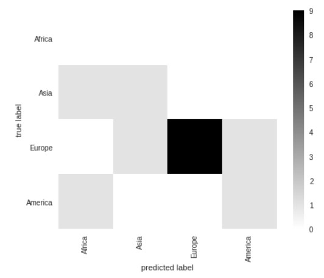
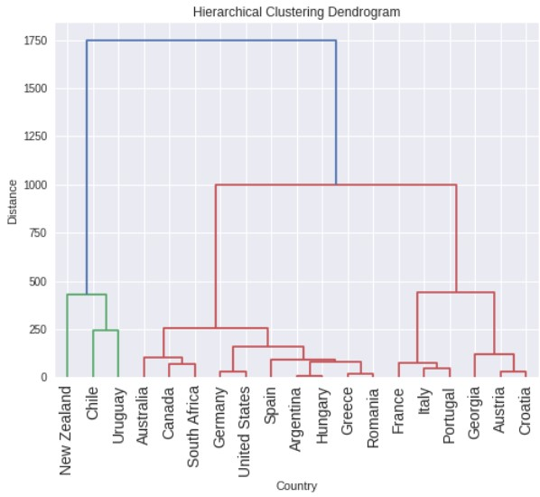

Uploading 2 graphs using code from rapidcharts.io
The first chart tracks the inflation rate in the UK using 3 different measures for this: CPI, RPI and the CPI with housing costs.
My second chart looks at a breakdown of CPI and each sectors contribution to inflation
Replicating a graph from the FT, improving it and uploading an original graph delivered by an API
A replication of the original graph
Having adjusted the data, the riskiest year for investing was 1984, since the credit outstanding was the largest as a percentage of global GDP.
Creating 2 charts from scratch using inline data
This data was sourced from the World Bank database, downloaded onto my computer and then transformed into a JSON format in Colab. Having done that I created 2 charts to show the access to electricity amongst different regions. I have also included the Global value to compare each regions performance in the global setting.
The second graph uses a bar chart with a slider for years and tooltip. It is more effective at comparing regions at similar levels.
Scraping data from a website, editing the dataset in Google Colab (link below), then create a chart.
I scraped my data from the academic paper titled
'The European wine Export Cycle'
. I then had to edit it and put into long form so that the data could then be placed into a multi-series line chart.
I chose this graph as it is interesting to see how export growth varies and whether certain countries have similar patterns.
Building a dashboard of 9 different series, batch downloaded as JSON files. Using google Colab I created a loop to download 9 time series from APIs using the ONS. I have chosen to produce 9 graphs on UK unemployment.
The Colab coding is in the link below, as is the link to my dashboard
Creating a base map of a region and then creating a choropleth map using the "lookup" transformation
A base map depicting Europe with a "tooltip" encoding to show the country when the user hovers over a country.
The map shows Europe, varied by their Fifa Rankings. The Eastern and smaller countries tend to have lower ratings compared to the West.
2 graphs supporting a statement made in the Festival of Economics
Dr Sarah Smith argued in the talk on Prices and Wages: Private wage growth was higher than that of the public wage growth, this is driven by growth in financial services growth in particular.
Both graphs back up the argument, where private wage growth (apart from during covid) was greater, so too was financial services wage growth
Producing 2 graphs using advanced analytics
A graph regressing GDP per capita on Wine consumption per capita
A scatter plot of countries wine production of wine and their average temperature
Conducting applied data anlysis using 2 machine learning techniques
Task 1: Supervised Learning - Classification
I used classification to see whether the Continent of a Country could be predicted based on Wine Market and Climate Statistics.

The correct continent was predicted with a 73% accuracy, Countries in the Americas were the hardest to predict and Europe had the most similar charachteristics.
Task 2: Unsupervised Learning - Clustering
Using a dendogram to evaluate the similarities and differences between key wine producers, in particular New World and Old World Countries.

Overall, the groupings show that New-World Countries predominantly exhibit similar characteristics, and so too do the Old-World Countries, there are some exceptions however (Argentina, USA).